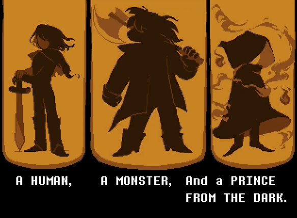

Deltarune é um RPG eletrônico desenvolvido por Toby Fox como sucessor de Undertale. O jogador controla Kris, um humano destinado a salvar o mundo junto com Susie e Ralsei. Juntos, devem selar as Fontes Negras, que ameaçam o equilíbrio entre luz e escuridão. O combate é baseado em turnos, incorporando mecânicas de bullet hell e permitindo resolver confrontos pacificamente ou com violência.
O desenvolvimento começou em 2012, três anos antes do lançamento de Undertale. Apesar de alguns personagens em comum, Deltarune ocorre em um universo diferente e introduz um sistema de batalha revisado. Os Capítulos 1 e 2 foram lançados gratuitamente em 2018 e 2021, respectivamente, com os próximos capítulos previstos para 2025. O jogo está disponível para Windows, macOS, Nintendo Switch e PlayStation 4
Deltarune possui uma perspectiva de cima para baixo. Kris é controlado diretamente, mas o jogador comanda também os outros membros do grupo durante o combate. O sistema inclui opções como lutar, agir, usar itens, magia, defender e poupar inimigos. Os encontros aleatórios foram removidos, permitindo evitar ou iniciar batalhas.
Os pontos de tensão (TP) acumulados em combate permitem realizar magias e habilidades especiais. Caso um membro do grupo fique sem HP, ele é incapacitado até ser revivido por fontes de cura.
A narrativa se estenderá por sete capítulos. Até agora, dois foram lançados:
Ao iniciar Deltarune, o jogador é convidado a criar um avatar personalizado, escolhendo aparência, vestimenta e preferências. No entanto, após a conclusão, o jogo imediatamente descarta o avatar e exibe uma mensagem impactante: "Ninguém pode escolher quem é nesse mundo."
A história então começa com o jogador assumindo o controle de Kris, um humano que vive com sua mãe adotiva, Toriel, uma gentil monstra caprina. Kris é um jovem humano reservado, de poucas palavras, que parece deslocado no mundo em que vive. Pela manhã, Toriel leva Kris até a escola, onde o jogador encontra Susie, uma colega de classe temida por sua postura agressiva e comportamento rebelde.
Durante a aula, a professora Alphys pede que alguém vá buscar giz para o quadro-negro. Susie e Kris são encarregados da tarefa e se dirigem ao armário de suprimentos. No entanto, ao entrar no armário escuro, uma força misteriosa os puxa para um lugar desconhecido e sinistro: o Mundo das Trevas.
Ao despertar nesse novo ambiente, Kris e Susie se deparam com um local surreal e repleto de mistérios. No início, eles são atacados por uma figura em silhueta, mas logo conhecem Ralsei, um jovem "Príncipe das Trevas" de aparência fofa e gentil. Ele explica que Kris e Susie são heróis profetizados, destinados a fechar a Fonte das Trevas, um poderoso gêiser de energia negra que ameaça consumir a realidade. No entanto, o Rei do Mundo das Trevas tomou o controle e pretende espalhar a escuridão, tornando seu domínio absoluto.
Susie, relutante e cética, recusa-se a ajudar e apenas quer encontrar uma saída. Durante sua jornada, o grupo encontra Lancer, o excêntrico e brincalhão filho do Rei, que tenta impedir sua missão de diversas formas cômicas. Eventualmente, Susie decide se juntar a Lancer, abandonando Kris e Ralsei.
Enquanto Kris e Ralsei continuam sozinhos, Susie gradualmente forma um laço com Lancer, percebendo que ele não é um verdadeiro inimigo. Eventualmente, os quatro personagens se reúnem e decidem seguir juntos. No entanto, ao se aproximarem do castelo do Rei, Lancer percebe que seus novos amigos estão prestes a enfrentar seu pai. Para evitar um confronto violento, ele foge e organiza uma emboscada, resultando na captura de Kris, Ralsei e Susie, que são jogados na masmorra do castelo.
Susie consegue escapar e confronta Lancer, que revela que estava apenas tentando impedir um combate direto. Susie hesita em atacar Lancer, e promete que não machucará seu pai e, com a ajuda de seus amigos, segue até o topo do castelo para enfrentar o Rei.
No momento do confronto, o Rei prova ser um oponente formidável, determinado a manter seu domínio. O desfecho da batalha depende da abordagem do jogador ao longo do jogo:
Se Kris tiver resolvido encontros pacificamente, sem recorrer à violência, Lancer convence os soldados do Rei a se rebelarem contra ele, aprisionando seu próprio pai. Se o jogador tiver adotado uma abordagem mais agressiva, Ralsei subjuga o Rei com um poderoso feitiço mágico. Independente do método, o grupo consegue selar a Fonte das Trevas, restaurando temporariamente o equilíbrio desse mundo.
Com a missão cumprida, Kris e Susie retornam ao mundo real. Susie se despede e expressa um certo desejo de voltar ao Mundo das Trevas, sugerindo que ela encontrou um lugar onde se sente mais aceita. O jogador, por sua vez, pode explorar a cidade de Hometown antes de fazer Kris voltar para casa e dormir. Naquela noite, no entanto, algo perturbador acontece. Sem controle do jogador, Kris acorda violentamente, começa a tremer e se levanta de maneira estranha. Ele se move de forma robótica até o centro do quarto, enfia a mão em seu próprio peito e arranca sua alma vermelha—a representação do controle do jogador. Ele a joga dentro de uma gaiola, isolando-a. Então, Kris pega uma faca e se vira lentamente para a tela, sorrindo de maneira sinistra. Seu olho direito brilha em um vermelho intenso, sugerindo algo sombrio e desconhecido.
O jogo termina abruptamente, deixando inúmeras questões em aberto.
Deltarune desafia a ideia de "livre arbítrio" e brinca com a noção de controle. O jogador realmente tem influência sobre os eventos? Ou tudo já estava predestinado? O que aconteceu com Kris naquela noite? Quem ou o que está realmente no comando? Essas perguntas permanecem sem respostas, alimentando teorias e especulações até os próximos capítulos.
No dia seguinte aos eventos no Mundo das Trevas, Kris e Susie, ainda incertos sobre a realidade do que viveram, decidem retornar para verificar se tudo aquilo realmente aconteceu. Ao atravessarem o portal oculto na sala de aula, encontram Ralsei, que os recebe calorosamente. No entanto, ao descobrir que os dois têm um trabalho escolar pendente, ele sugere que retornem à superfície para terminá-lo junto aos seus colegas: Noelle e Berdly.
De volta ao mundo real, Kris e Susie se dirigem à biblioteca, onde o trabalho deveria ser feito no laboratório de informática. Entretanto, ao chegarem ao local, deparam-se com um fenômeno inesperado: um novo Mundo das Trevas se revela diante deles. Movidos pela curiosidade, os dois adentram essa nova dimensão, conhecida como Cyber World.
Logo ao chegarem, algo estranho acontece—Ralsei aparece novamente, sem nenhuma explicação lógica para sua presença em um mundo diferente daquele em que deveria estar. O grupo explora esse território digital e descobre que a governante local, conhecida como Queen, tem um plano ambicioso: abrir uma nova Fonte das Trevas. Para isso, ela sequestrou Noelle, que foi sugada para o Cyber World junto com Berdly.
Berdly, movido por sua admiração por Noelle e pela influência de Queen, decide ajudá-la em seus planos.
Determinados a salvar Noelle, o grupo se separa para cobrir mais terreno. Após um tempo de buscas, Kris consegue encontrar e libertar Noelle, ajudando-a a fugir do domínio de Queen. Porém, antes que possam escapar, Queen os intercepta e aprisiona todos.
Quando tudo parece perdido, Lancer surge inesperadamente para resgatar seus amigos. Ele consegue libertar Kris e Susie, mas, ao passar muito tempo em um mundo diferente do seu, seu corpo começa a petrificar, transformando-se em pedra. Com o peso da situação aumentando, Kris e Susie seguem em frente e, ao se depararem com Berdly, convencem-no a mudar de lado.
Após uma luta intensa, Berdly é libertado, e Queen bate em retirada. Pouco depois, ela reaparece e decide revelar um segredo crucial: qualquer Lightner (seres do mundo real, como Kris, Susie, Noelle e Berdly) pode abrir uma Fonte das Trevas, desde que possua Determinação suficiente.
Após essa revelação chocante, Queen desafia o grupo para um confronto final, utilizando um traje de robô gigante em uma batalha que faz referência ao clássico Punch-Out!!. Apesar de seus esforços, os heróis não conseguem derrotá-la completamente. Queen então ameaça eliminar o grupo caso Noelle não aceite seguir com seus planos.
No entanto, Noelle se revolta e se recusa a ser manipulada, declarando que não será controlada por ninguém. Esse momento de resistência faz Queen perceber que seus métodos estavam errados. Ela encoraja Noelle a criar o mundo que deseja, pouco antes de seu robô ficar sem energia.
Nesse momento, Berdly tenta abrir uma nova Fonte, mas Ralsei intervém rapidamente, alertando sobre um perigo maior: "The Roaring". Esse evento cataclísmico ocorre quando muitas Fontes das Trevas são abertas ao mesmo tempo, resultando no surgimento de legiões de monstros colossais que podem consumir toda a realidade.
Ao ouvir essa explicação, Queen finalmente abandona seus planos, desistindo de sua ambição de espalhar a escuridão. Após o conflito, Noelle expressa sua gratidão a Susie por tê-la resgatado e demonstra um interesse maior por ela, sugerindo o início de um novo laço entre as duas. Kris e Susie então selam a nova Fonte das Trevas, restaurando o equilíbrio da realidade. Antes de partirem, Kris realoca Queen e seus seguidores para Castle Town, onde poderão viver em paz.
Após o fechamento da Fonte, Kris e Susie despertam de volta no laboratório de informática, junto com Noelle e Berdly, que acreditam que tudo o que aconteceu não passou de um sonho estranho.
No caminho de volta, Susie acompanha Kris até sua casa e é convidada por Toriel para ficar um pouco mais. Enquanto isso, Kris se retira para o banheiro.
Nesse momento, algo perturbador acontece novamente:
Kris arranca sua própria alma mais uma vez, isolando-a dentro da pia. Ele então sobe pela janela, desaparecendo momentaneamente. Pouco depois, Kris retorna, recoloca sua alma no corpo, e age como se nada tivesse acontecido.
Enquanto isso, Toriel percebe que os pneus de seu carro foram cortados e, preocupada, decide chamar a polícia. Como já estava tarde, ela sugere que Susie passe a noite na casa deles.
Quando todos adormecem, Kris mais uma vez remove sua alma e, dessa vez, empunha uma faca, caminhando lentamente até a sala de estar. Sem hesitação, ele abre uma nova Fonte das Trevas, trazendo à tona um novo mistério sombrio.
Com esse desfecho enigmático, muitas perguntas permanecem sem respostas: Kris está no controle de suas ações ou algo mais está agindo através dele? Por que ele está abrindo Fontes das Trevas? A relação entre as Fontes e a Determinação dos Lightners sugere uma conexão com Undertale? O que realmente acontecerá caso "The Roaring" ocorra? Mais uma vez, Deltarune termina com um grande mistério, deixando os jogadores ansiosos pelos próximos capítulos e pelas revelações que ainda estão por vir.
O desvio sombrio da história começa de maneira sutil. Assim que Noelle se junta a Kris em Cyber World, as interações entre os dois tomam um rumo estranho e desconfortável. Noelle, que normalmente hesitaria em atacar de maneira agressiva, começa a obedecer comandos sem questionar. Mas, diferentemente da rota normal, há uma insistência em um único tipo de magia—o gelo. A princípio, ela reluta, mas a cada batalha, o frio se torna mais intenso e a violência de seus ataques, mais incontestável.
Durante essa jornada, um comerciante aparece com um item peculiar: um Anel de Congelamento (Freeze Ring). Ele promete um aumento significativo no poder de Noelle, mas algo na forma como Kris a força a aceitar o anel soa errado. Noelle hesita, diz que não quer colocá-lo, mas o jogador, através de Kris, insiste; todavia, o anel não podia ser comprado pelo alto preço, então Kris ataca o comerciante. Quando ela finalmente veste o anel, ela sente um arrepio diferente, algo que vai além do frio físico—como se algo dentro dela estivesse se alterando.
A medida que avançam, as opções de diálogo mudam. Sempre que Noelle tenta questionar as decisões de Kris, uma opção aparece de forma inescapável: “Prossiga”. O jogador a força a seguir em frente, independente de sua resistência, e sua expressão começa a se tornar vazia.
Então, nas profundezas do Cyber World, em um beco onde o lixo se acumula, um personagem inesperado surge: Spamton. Ele não está no auge de sua insanidade como na rota normal. Pelo contrário, ele parece saber o que está acontecendo. Com um sorriso sinistro, ele oferece um novo anel—o Anel de Espinhos (Thorn Ring). Quando Noelle o coloca, ela reage com dor, mas já não há mais protestos. Ela já não parece se importar.
Finalmente, o momento crucial chega. Berdly, o colega de Noelle, aparece, preocupado com a situação, determinado a pará-los. Mas desta vez, o combate não segue a estrutura tradicional. Noelle parece reconhecer Berdly como um inimigo que tem de ser eliminado. Quando Kris ordena que Noelle ataque, uma nova opção surge—“Snowgrave”.
Noelle hesita. Ela não conhece esse feitiço. Ela nunca o aprendeu. E, no entanto, ali está ele, uma opção clara e inevitável. Ela tenta recusar. Pergunta o que significa. Mas a única resposta que recebe é o silêncio de Kris.
E então, com as mãos trêmulas, ela lança o feitiço.
O que acontece em seguida é um mistério. Berdly não grita, não reage, não tem tempo de processar. Em um instante, ele é envolvido por uma geada brutal, e sua figura se apaga sob o peso de uma tempestade congelante. Quando o feitiço termina, um silêncio sepulcral toma conta do ambiente. Noelle olha para o que fez. Suas mãos tremem. Seus olhos se arregalam. Ela murmura para si mesma que algo está errado. Que ela não se sente bem.
E então, ela foge. A partir desse momento, não há mais volta.
Após congelar Berdly, Noelle fica extremamente perturbada e abandona a equipe, afirmando que não se sente bem. Kris, agora sozinho, segue pelo sistema de esgoto até o palácio da Queen, mas encontra o ambiente drasticamente modificado. Vários eventos da rota normal, como cutscenes, lojas e diálogos, estão bloqueados, tornando o caminho mais silencioso e desolador.
Diferente da rota padrão, onde a batalha final é contra Queen, na rota Snowgrave o chefe final é Spamton NEO, e Kris deve enfrentá-lo sozinho. Durante a luta, Kris pode tentar chamar Susie e Ralsei para ajudar, mas não recebe resposta. No entanto, ao chamar Noelle, ela aparece repentinamente e aniquila Spamton com um único ataque, demonstrando um poder que ela própria não compreende.
De volta ao laboratório de informática, Noelle, Kris e Susie despertam, mas Berdly continua imóvel. Enquanto na rota normal ele acorda e age normalmente, na rota Snowgrave ele permanece desacordado, deixando incerto se ele está apenas em um sono profundo ou se realmente morreu.
Noelle, profundamente abalada, começa a se questionar sobre tudo o que aconteceu. Na cena do hospital, ela parece aterrorizada e repete para si mesma que "foi apenas um sonho", tentando reprimir o que viveu na Rota Snowgrave. Seu comportamento sugere que ela guarda lembranças da experiência, mas luta para negá-las, aumentando ainda mais o mistério e o impacto psicológico da história.

Toby Fox iniciou Deltarune inspirado por um sonho; Toby Fox começou a trabalhar no conceito de Deltarune antes mesmo do lançamento de Undertale (2015). O jogo, desenvolvido no GameMaker Studio 2, teve sua trilha sonora e narrativa elogiadas.
Os Capítulos 3 e 4 serão lançados juntos como um pacote pago em 2025, com o Capítulo 5 em desenvolvimento. Toby Fox expandiu a equipe para acelerar a produção.
Deltarune foi amplamente elogiado por sua narrativa, humor, personagens e trilha sonora. A jogabilidade refinada e a qualidade da pixel art também foram destacadas. Muitos críticos o compararam positivamente a Undertale, apreciando sua abordagem mais elaborada, embora alguns tenham notado poucas inovações.
A trilha sonora de Toby Fox recebeu destaque, com faixas como "Don't Forget" ganhando popularidade. A mercadoria oficial e lançamentos em vinil reforçaram seu impacto na comunidade gamer.